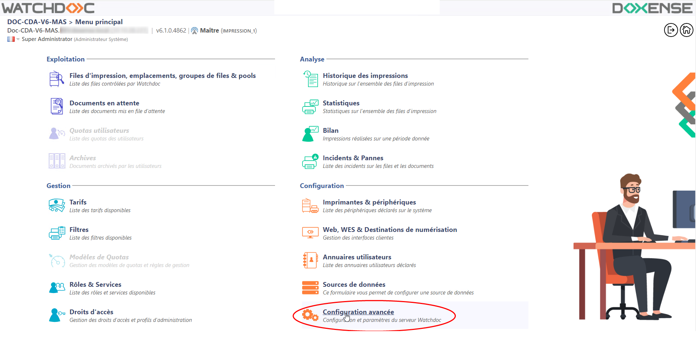
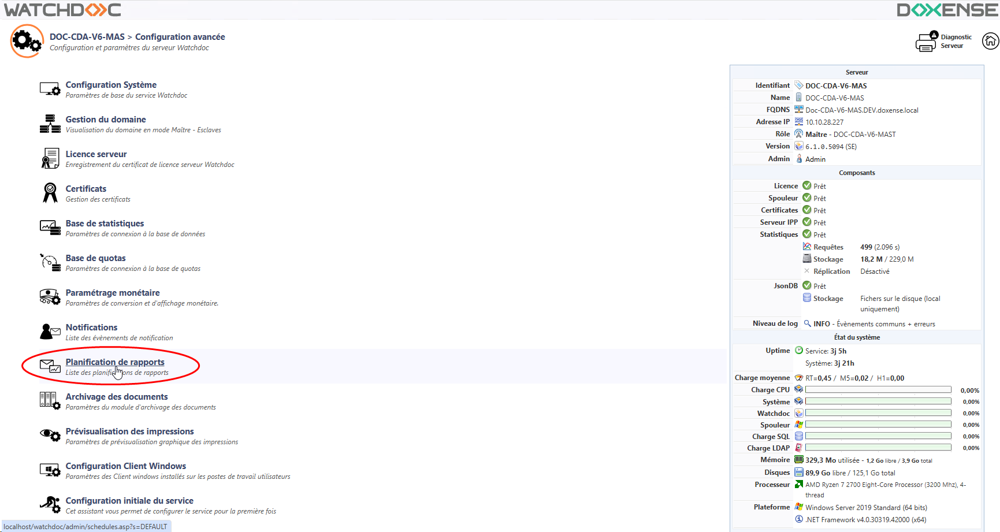
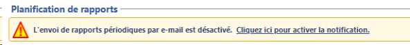
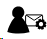
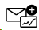
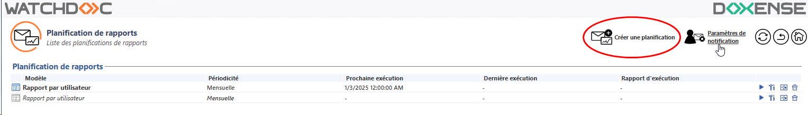
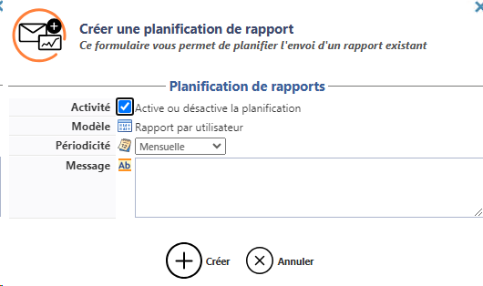
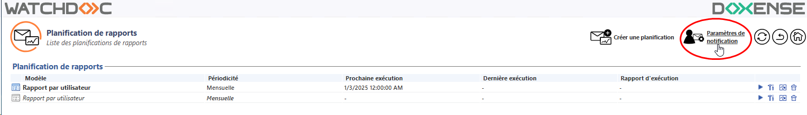
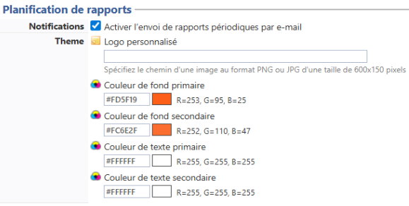
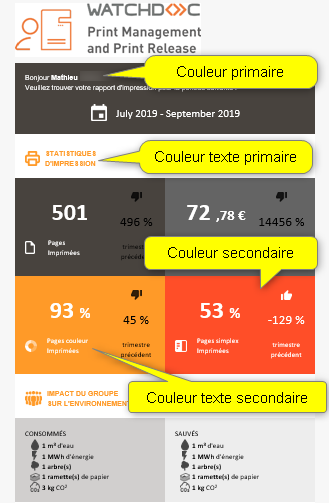

Accéder à l'interface de configuration
Pour accéder à l'interface de configuration du Communicateur de rapports, accédez à l'interface d'administration de Watchdoc en tant qu'administrateur ;
-
depuis le Menu principal, section Configuration, cliquez sur Configuration avancée :

-
dans l'interface [Serveur]> Configuration avancée, cliquez sur Planification de rapports ;

Vous accédez à l'interface de planification des rapports.
Dans cette interface figure la liste des rapports déjà planifiés, avec leurs propriétés :
-
le modèle sur lequel repose le rapport conçu ;
-
la périodicité de l'envoi,
-
la date de la dernière exécution ;
-
le rapport d'exécution informant de la réussite ou de l'échec de l'opération.
En dernière colonne figurent des outils permettant :
-
de lancer manuellement l'exécution du rapport ;
-
 d'éditer les paramètres de la planification ;
d'éditer les paramètres de la planification ; -
 de dupliquer la planification de sorte de la réutiliser pour un autre usage ;
de dupliquer la planification de sorte de la réutiliser pour un autre usage ; -
 de supprimer la planification.
de supprimer la planification.
La planification de rapports repose sur la configuration de la notification par e-mail. Si la notification n'est pas activée, un message vous invite à l'activer :

Au-dessus de la liste figurent deux boutons :
-

Paramètres de notification donne accès au formulaire de configuration du service d'envoi de rapports: -

Créer une planification donne accès au formulaire de planification de l'envoi de rapports.
Créer une planification l'envoi d'un rapport
-
Pour créer une planification de rapports depuis l'interface Planification de rapports, cliquez sur le bouton Créer une planification :

-
Dans le formulaire Créer une planification de rapports :
-
Activité : cochez la case pour activer la planification ;
-
Modèle : sélectionnez dans la liste le modèle de rapport sur lequel se fonde le rapport configuré ;
-
Périodicité : dans la liste, sélectionnez la fréquence à laquelle vous souhaitez envoyer votre rapport ;
-
Message : saisissez dans cette zone le message du mail accompagnant le rapport et permettant de le présenter :

-
-
cliquez sur le bouton
 Créer pour valider la création du rapport.
Créer pour valider la création du rapport.
è Le rapport créé s'ajoute à la liste des rapports existants. Toutes les informations relatives à son envoi sont affichées dans le tableau. Vous pouvez ainsi en contrôler la bonne exécution.
Paramétrer les notifications pour les rapports
-
Pour paramétrer une notification, depuis l'interface Planification de rapports, cliquez sur le bouton Paramètres de notification :

-
Dans le formulaire Configuration des notifications, s'ils sont vides, complétez les champs de la section Contact permettant d'identifier la personne en charge de ce service :
-
Administrateur : saisissez le nom de l'administrateur du service ;
-
E-mail : saisissez l'adresse mail de l'administrateur du service ;
-
Téléphone : indiquez le numéro de téléphone de l'administrateur du service ;
-
Message :: saisissez dans cette zone des informations supplémentaires qui s'afficheront dans l'entête du mail présentant le rapport.
-
section Planification de rapports :
-
Notifications : cochez la case pour activer le service ;
-
Thème : personnalisez graphiquement les e-mails de rapports :
-
logo : saisissez dans le champ le chemin d'accès un fichier image personnalisant le bandeau du mail d'information:
-
couleur primaire : saisissez le code hexadécimal précisant la couleur des libellés principaux et de l'encart des pages couleurs imprimées ;
-
couleur secondaire : saisissez un code hexadécimal précisant la couleur de l'encart des pages simples imprimées
-
couleur texte primaire : saisissez un code hexadécimal précisant la couleur du texte primaire.
-
couleur texte secondaire : saisissez un code hexadécimal précisant la couleur du texte secondaire.


-
-
-
-
Cliquez sur Valider pour enregistrer la configuration des rapports.